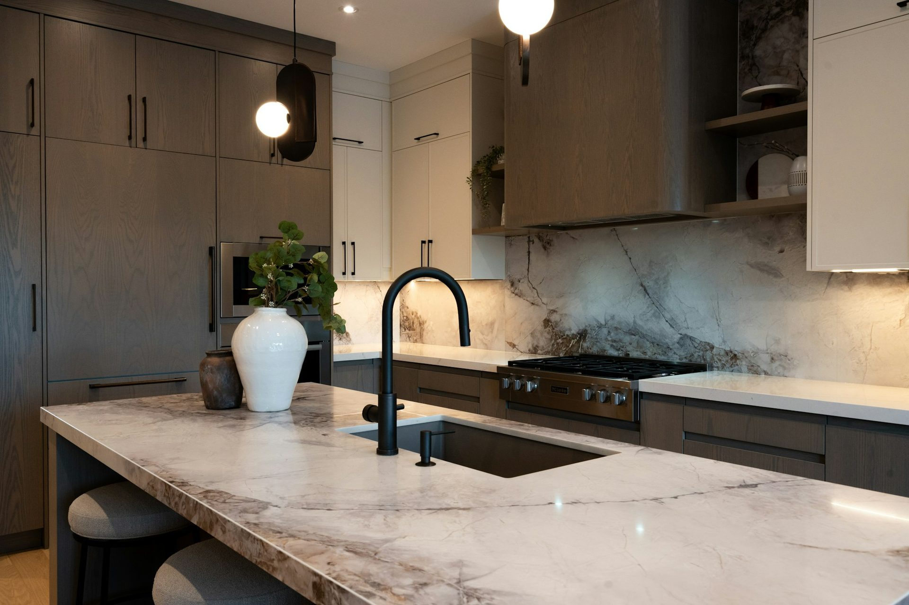
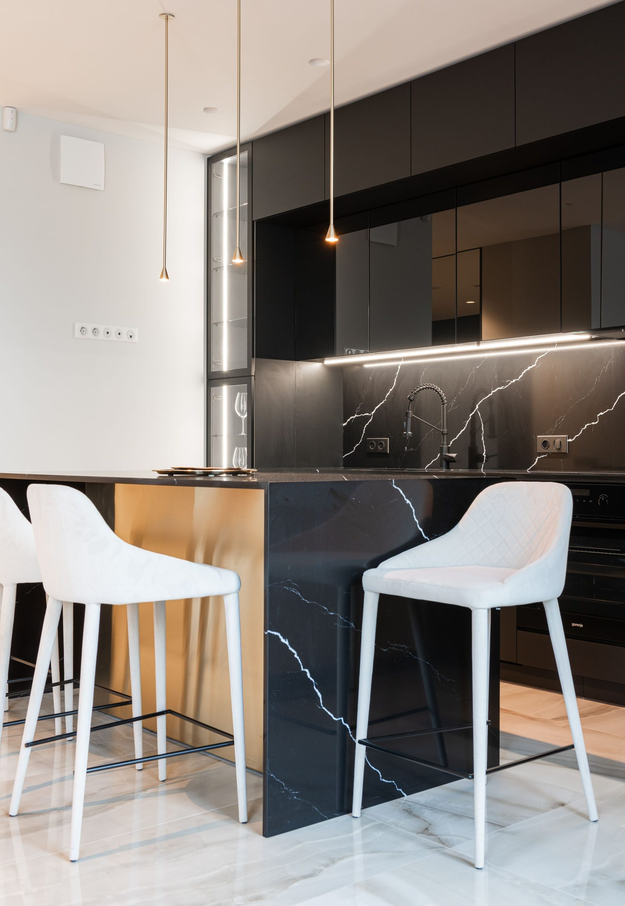
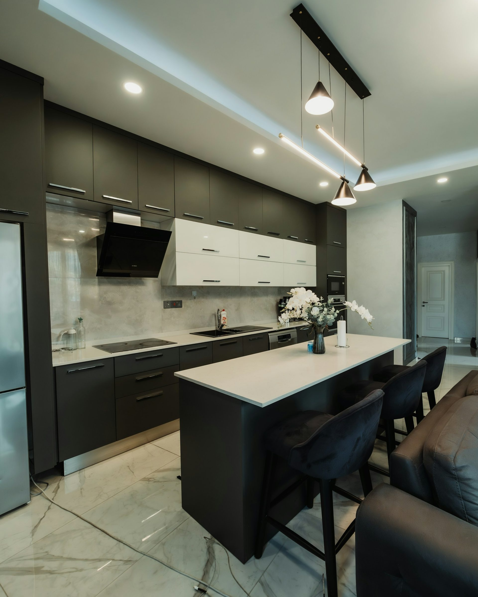

What a kitchen
actually costs.
Most cost guides average other people’s prices. These are ours, published openly, and they are the same numbers our quotes are built from.
The short answer
Cabinetry supply runs $1,970 – $8,700 per linear metre of bench, depending on the collection. A 3.6m kitchen is roughly $7,092 – $18,144 supplied with a laminate benchtop. A stone benchtop adds $1,750, an island $2,850. Freight, appliances and licensed trades are separate and are never folded into the price.

By run length
What your wall costs.
Measure the wall your kitchen runs along, wall to wall. That length is what drives the number more than anything else. These figures include a laminate benchtop and exclude freight.
| Run | Essence | Maison | Atelier |
|---|---|---|---|
| 2.4m | $4,728 – $6,840 | $7,368 – $12,096 | $14,760 – $20,880 |
| 3m | $5,910 – $8,550 | $9,210 – $15,120 | $18,450 – $26,100 |
| 3.6m | $7,092 – $10,260 | $11,052 – $18,144 | $22,140 – $31,320 |
| 4.2m | $8,274 – $11,970 | $12,894 – $21,168 | $25,830 – $36,540 |
| 4.8m | $9,456 – $13,680 | $14,736 – $24,192 | $29,520 – $41,760 |
| 6m | $11,820 – $17,100 | $18,420 – $30,240 | $36,900 – $52,200 |
Nothing quotes below $4,500, which is what the smallest kitchenette costs. Kitchenettes start there.
Per linear metre
The unit that fits cabinetry.
Renovation guides price per square metre of floor. That is the wrong unit for cabinetry, because you are not buying cabinets for the middle of the room. Cabinetry is made in runs, so it is priced by the metre of run.
| Collection | Per linear metre | What it is |
|---|---|---|
| Essence | $1,970 – $2,850 | Soft-matte doors, 18mm moisture-resistant carcasses, Blum soft-close throughout, laminate benchtop. |
| Maison | $3,070 – $5,040 | Deeper door range, stone benchtop, integrated appliance provision, full-height joinery where the room allows. |
| Atelier | $6,150 – $8,700 | Bespoke detailing, specialist finishes, mitred stone, motorised and specialty hardware. |
Benchtops
The second biggest decision.
After run length, the benchtop moves the number most. Laminate is included in every tier rate; the figures below are what each upgrade adds.
| Material | Added cost | Durability | Care |
|---|---|---|---|
| Laminate | Included | Good | Wipe clean; avoid standing heat and water at the joins |
| Engineered stone | +$1,750 – $2,363 | Very good | Sealed; avoid abrasives and sustained heat |
| Porcelain | +$3,000 – $4,050 | Excellent | Near-inert; heat and scratch resistant |
| Natural stone | +$4,750 – $6,413 | Excellent | Needs periodic resealing; marks from acids |
Stone and porcelain are templated on site after the cabinets are installed, by a fabricator near you, which is why they are quoted separately from the cabinetry. Benchtop thickness covers what a 40mm edge really is.
Additions
Priced as their own line.
Each of these is quoted separately so you can see what it costs and take it off if it is not worth it to you. That is the point of an itemised quote.
| Addition | Cost |
|---|---|
| Butler's pantry | $4,000 – $5,600 |
| Island | $2,850 – $3,990 |
| Appliance provision pack | $3,700 – $5,180 |
| Wine storage | $2,350 – $3,290 |
| Line | Cost | Share |
|---|---|---|
| Cabinetry, 3.6m in Maison | $11,052 | 71% |
| Engineered stone benchtop | $1,750 | 11% |
| Island | $2,850 | 18% |
| Total, supplied | $15,652 | 100% |
Freight to your postcode, appliances, and plumbing and electrical work are not in that figure. This is the low end of the Maison range; the same kitchen at the top of the range is $24,497.
What moves the number
Six things, in order of effect.
Run length
The single biggest factor. Cabinetry is priced by the metre, so an extra metre of bench costs roughly what a metre already costs. Shortening a run is the most effective saving available.
Benchtop material
Laminate to engineered stone is $1,750 on a typical kitchen; to natural stone, $4,750. Nothing else you choose moves the total by that much for a single decision.
Drawers against doors
Drawers cost more than doors because of the runners. They are usually worth it below the bench, and almost never worth it above. See drawers vs cupboards.
An island
$2,850 and up, plus the services to reach it. An island is a second run of cabinetry and should be costed as one, not as a feature.
Appliance provision
Cabinets cut to take specific appliances cost more than plain boxes, and the model has to be confirmed before cutting. See cut-out sizes.
Flat packed or assembled
Same cabinetry either way. What changes is the assembly line and the freight volume, both quoted separately. Over distance most orders go flat.
Spending less
Six honest ways, and the trade-off on each.
- Keep the layout. Moving the sink or the cooktop means new plumbing and electrical runs. The cabinetry barely changes; the trades bill does. This is the largest saving available on most renovations.
- Laminate now, stone later. A benchtop can be replaced without touching the cabinets. Starting with laminate saves $1,750 and costs you nothing except doing it twice.
- Fewer, wider cabinets. Each cabinet carries its own cost. Three 900mm cabinets cost less than four 675mm ones across the same wall, and store the same amount.
- Drawers only where they earn it. Pot drawers below the cooktop and by the sink. Doors elsewhere. The usability gain is concentrated in two or three cabinets.
- Take it flat packed. The cabinetry price is identical. You save the assembly line and part of the freight, and you spend a weekend instead.
- Buy appliances separately. We will cut to any model. Appliance pricing moves constantly and you will usually beat a supply-and-install price by buying in a sale.
Not in these figures
What you still have to budget for.
We sell cabinetry. A finished kitchen needs more than that, and pretending otherwise would make every number above misleading. These are costs we do not quote and do not publish figures for, because we would be guessing.
Freight
Quoted to your postcode on your quote, as its own line.
Licensed trades
Plumbing and electrical connection. Required, and priced locally.
Installation
Our own team within Central Queensland. Elsewhere, your installer.
Demolition
Removing and disposing of the old kitchen.
Our install guide sets out the three trades and the order they work in, which is the best way to understand what the rest of the job will cost you locally.
Frequently asked
Cost questions, answered plainly
If your question is not here, call the studio. We would rather talk it through than have you guess.
Ask us directly →How much does a kitchen cost in Australia?
Cabinetry supply runs from $1,970 to $8,700 per linear metre depending on the collection. A 3.6m kitchen is therefore roughly $7,092 – $18,144 supplied, before freight, appliances and trades.
What is a kitchen priced per linear metre?
Cabinetry is made in runs along a wall, so the length of that run is what drives the cost. Per square metre is a renovation measure that includes floor area you are not buying cabinets for; per linear metre is the unit that actually describes cabinetry.
What is not included in these figures?
Freight to your postcode, which is quoted separately and shown as its own line. Appliances unless you ask us to supply them. Plumbing and electrical work, which must be done by licensed trades. Installation outside Central Queensland. Demolition and disposal of an old kitchen.
Is a cheaper kitchen worse?
Not in the way people assume. Every collection uses the same 18mm moisture-resistant board, the same laser-bonded edging and the same Blum hardware. What changes between them is the door range, the benchtop and the detailing, not the parts that decide how long it lasts.
How accurate are these numbers?
They are our own rates, reviewed October 2026, not an average of other companies. A quote drawn to your measurements may land anywhere in the stated range depending on the cabinet mix. Nothing here is an estimate of what someone else would charge.
Can I get a fixed price?
Yes. Send the wall measurements and ceiling height and you get a drawing and a fixed, itemised quote, with freight to your postcode on its own line. Nothing is due to see it and nothing is cut until you sign the drawing off.
About this guide
Where these numbers come from.
Every figure on this page is our own rate card, reviewed October 2026. They are not an average of the industry, not scraped from quote sites, and not estimates of what a competitor charges. They are the rates our own quotes are built from, published so you can hold them against anything else you are offered. How we price sets out the method, what is excluded and how often it is reviewed.
Delivered assembled
The assembly is done
before it arrives.
Carcasses built square on a bench, Blum hardware fitted, doors hung and adjusted to even gaps. On site you are fixing finished cabinets to a wall, not building them on the floor. Our own team fits it in Central Queensland; your installer fits it anywhere else in Australia. Prefer to build it yourself? The same kitchen ships flat pack.

Handleless rail on an assembled run

Gloss doors, adjusted to even gaps before delivery

Black joinery, marble bar

Your kitchen
Send us the dimensions.
We will send back a number.
A fixed, itemised quote drawn to your room, flat packed and delivered assembled, with freight to your postcode on each. Nothing to pay to see it.